About us :
BRS Global school at Kasavanahalli, was established in the year 2008, under the chairmanship of Sri. K. R. Rajashekhar Reddy. This institution has affiliation of 11th and 12th std classes to the Central Board of Secondary Education (Affiliation number is 830346.) the National body of the Government of India in Secondary Education.
BRS Global School is a co-educational, independent day school from pre-school to Class X. BRS Global School is affiliated to CBSE and follows a blend of KG and Montessori curriculum for early learning. BRS School is dedicated to providing academic knowledge and preparation for responsible citizenship and prides itself on the attention given to each individual student. The school establishes a reputation for excellence in academia and continues to forge ahead as a leader in education and in the community. The school aims to provide an academically rigorous curriculum as the foundation upon which students are encouraged to build to future success. Strong emphasis is placed on the ideals of international understanding and responsible citizenship.
To Know about [BRS Global School] http://www.brseducation.in/kasavanahalli/index.html
To Know about [QtPi Robotics] (https://www.qtpi.in/)
One of the highlights of the 22nd Edition of Bengaluru Tech Summit 2019 was, students were given a hands-on workshop on the first day of the summit, 18th Nov where they were told to design and build a Remote Control Car with Headlights for the competition that was held on the next day, 19th Nov. In order to control and move the car through a hurdle, students were thought and introduced to programming to build an app using App Inventor (Code2Play). The app was used to control and navigate the car using a mobile.
On the final day, 20th Nov winners were awarded by Dr. C. N. Ashwath Narayan, Deputy Chief Minister of Karnataka along with other dignitaries. He is also the Minister of Higher Education, Medical Education, Information Technology & Biotechnology and Science & Technology in the Government of Karnataka.
Over 120 students from the states of Karnataka, Telangana, A.P. and Tamil Nadu participated in this one of a kind Robo Race that was held during the summit. The robotics events were organized by M/s QTPI Robotics.
On this event the students from our school participated and presented their Robotics projects like:
1. Agricultural robot
2. Air pollution detector
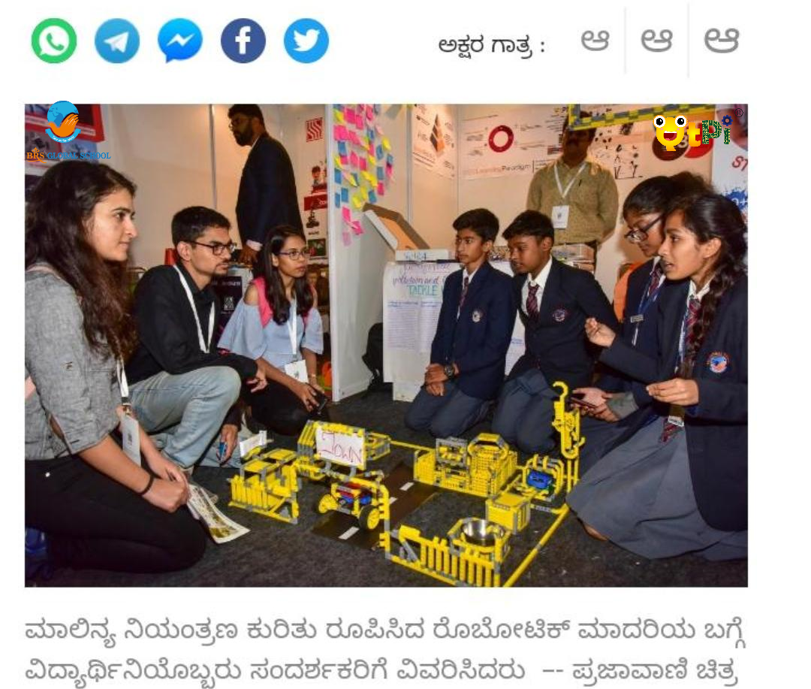 |
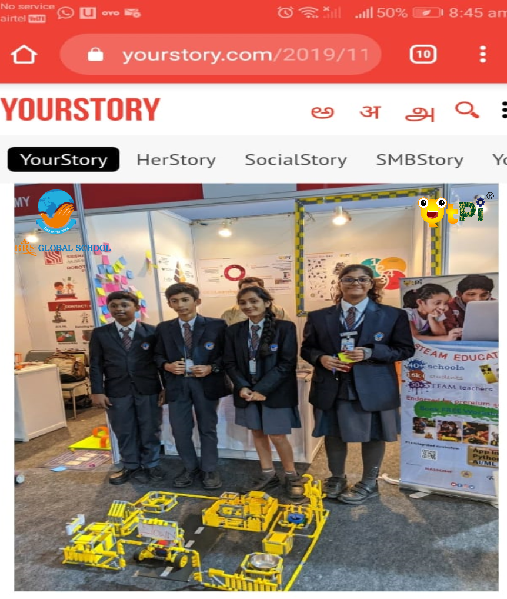 |
Secured 2nd & 3rd place and received cash prize in Drone competition from honorable Deputy Chief minister Ashwath narayan organised in BTS Event 2019
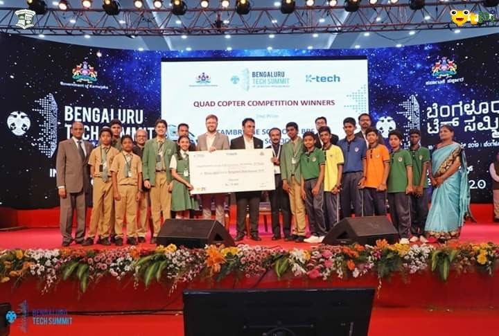 | 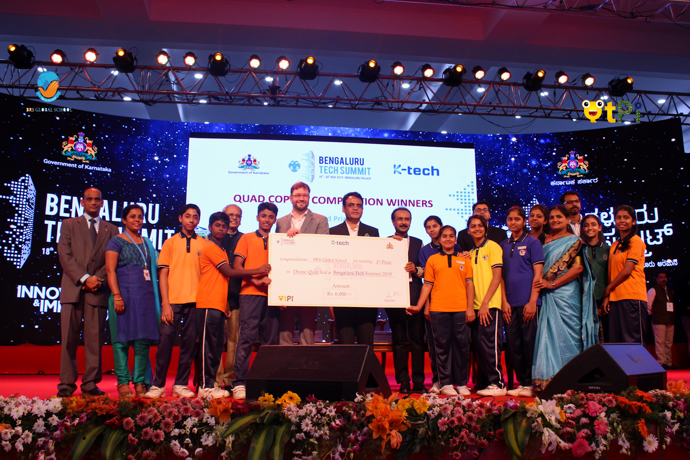 |
QtPi conducted a Badge Design Competition in July to identify QtSTAR Team and the winners from our school are:
Day/time | 8:30-8:50 | 8:50-9:30 | 9:30- 10:10 | 10:10-10:20 | 10:20- 11:00 | 11:00- 11:40 | 11:40- 12:20 | 12:20-12:50 | 12:50-1:30 | 1:30- 2:10 | 2:10-2:50 |
Tue | 3A &3B | Short break | 2A & 2B | 1C | lunch | 5A &5B | |||||
Wed | 3C | 2C | |||||||||
Thurs | 9A | 1A&1B | 1C | 7A&7B | |||||||
Fri | 6A& 6B | 4A&4B | 8A&8B | ||||||||
INDEPENDENCE DAY EVENTS
BRS global School celebrate the 72nd Independence day on school campus .Kids Presenting the projects to parents some new ideas implemented as a project by Kids like -
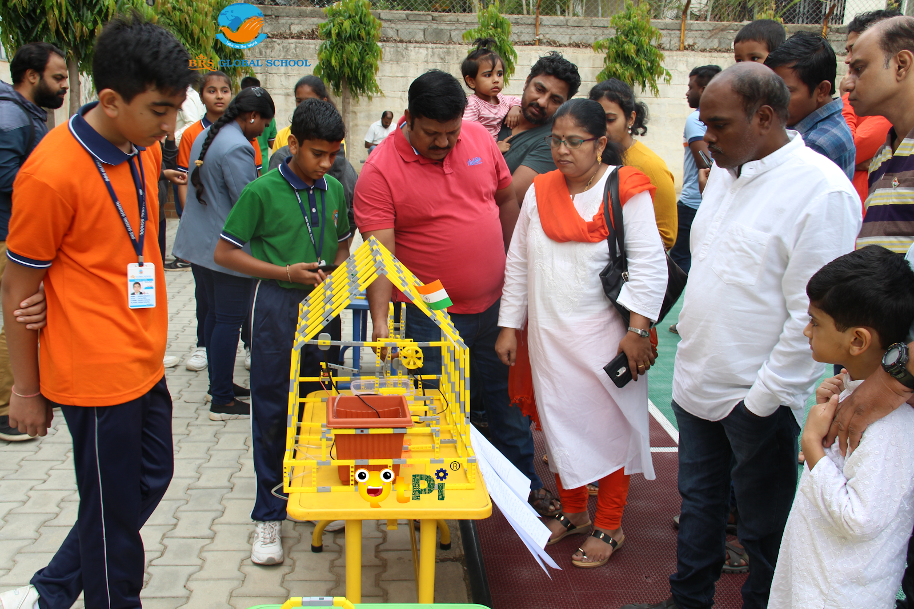 | 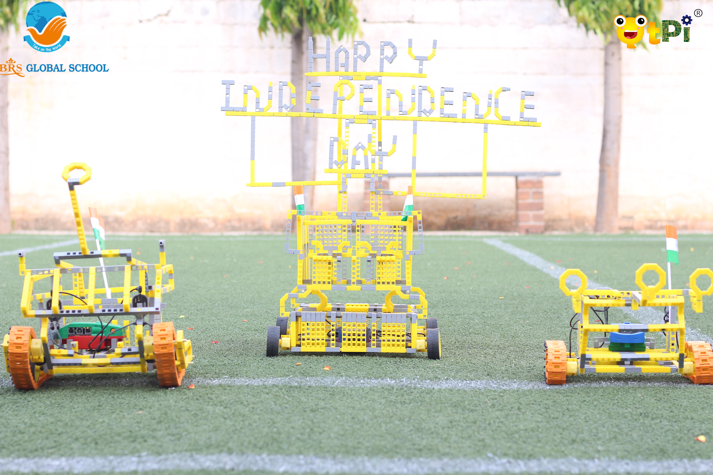 |
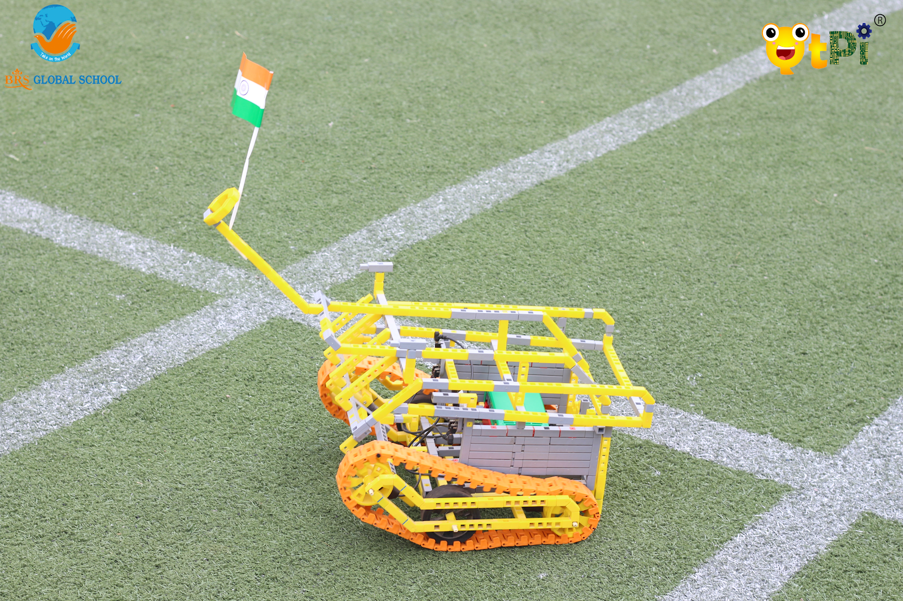 | 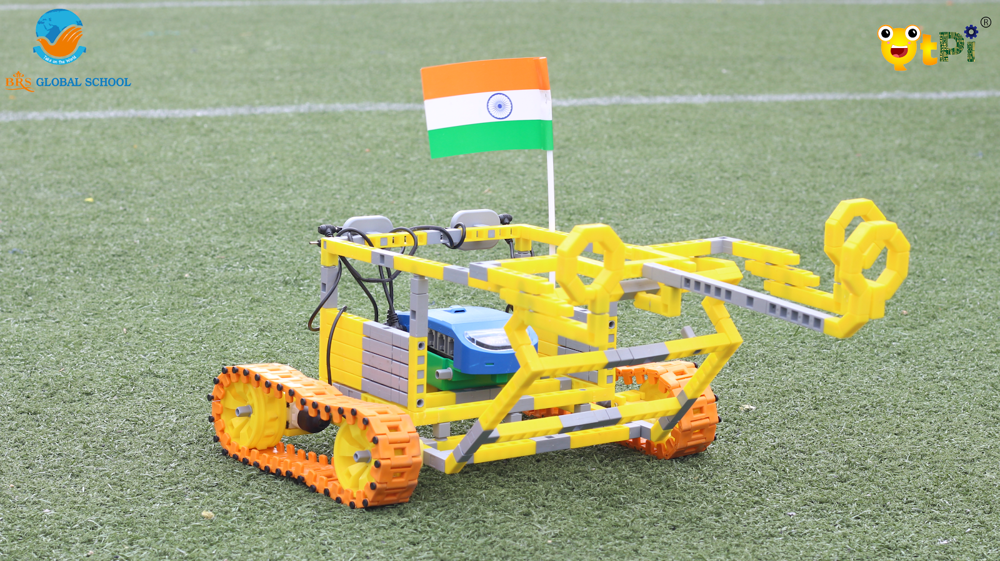 |
VIDEOS
Feedback of students,parents and principal videos link as follow
BRS global School Kids Presenting the projects to parents some new ideas implemented as a project by Kids like -
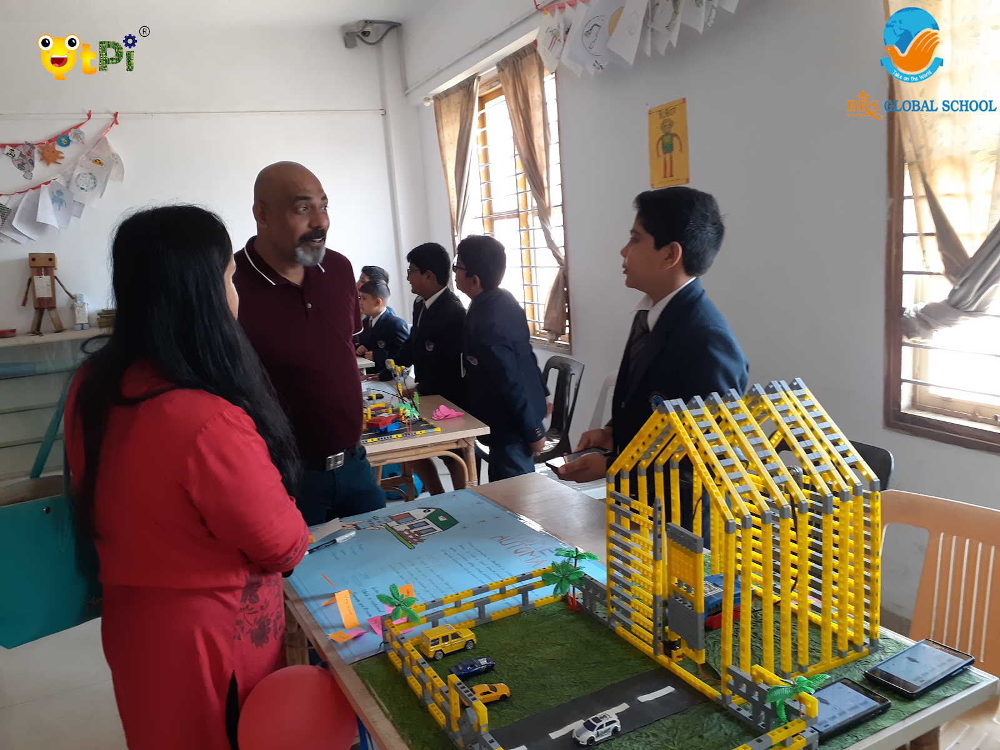 | 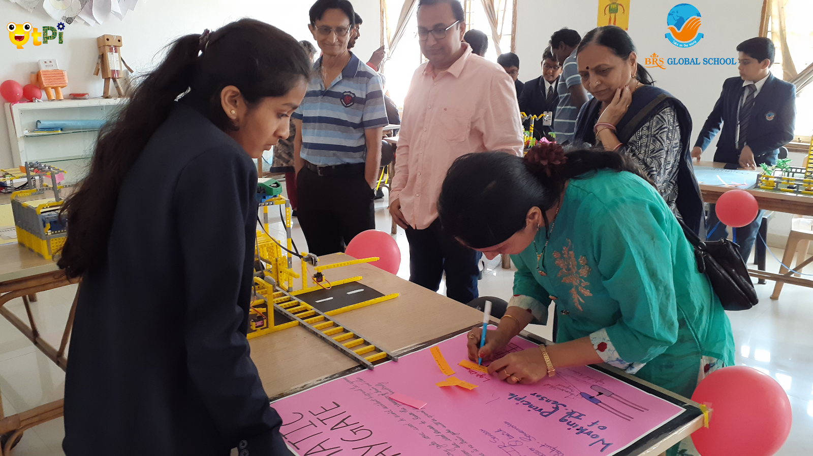 |
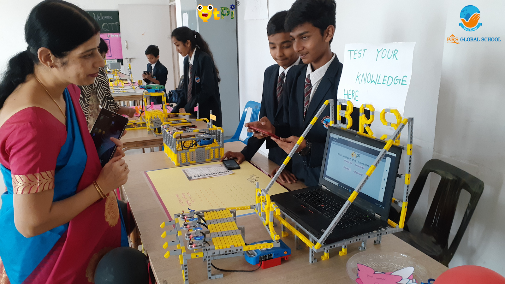 | 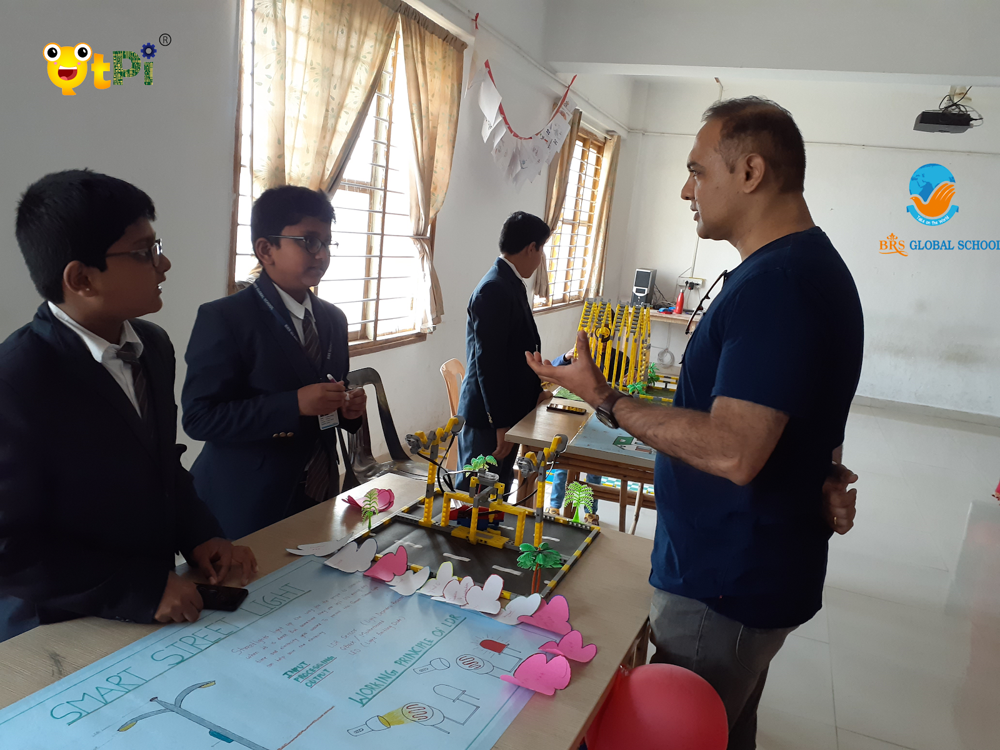 |
Trainers | Photo | Time Table |
Sasirekha BE (EIE) | Tue:3B,2B,5A Wed:3C Thur:1B,7B,1C Fri:6A,4A,8B | |
Farzana BE(CSE) | Tue:3A,2A,1C,5B Wed:2C Thur:1A,7A Fri:6B,4B,8A |